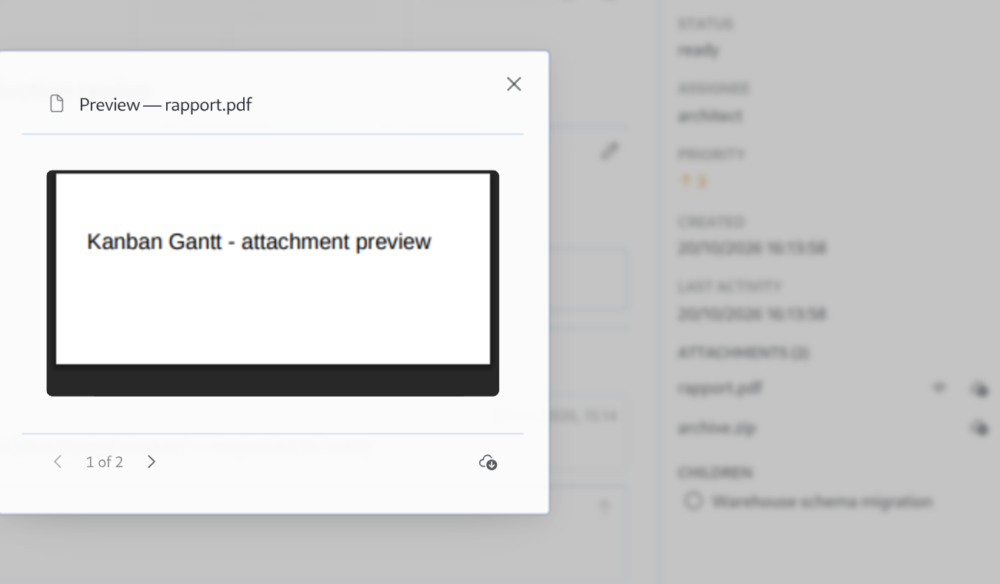

<template id="s6-template">
  <div data-composition-id="s6" data-width="1920" data-height="1080">
    <div class="frame">
      <div class="col">
        <span class="label">Attachments</span>
        <h2>Open a file without leaving the board.</h2>
        <p>PDF, images, notes: the preview opens over the task, with page turns and a download.</p>
      </div>
      <div class="board">
        
        <div class="cursor">
          <svg viewBox="0 0 28 36" width="34" height="44"><path d="M2 2 L2 28 L9.5 21.5 L14.5 33 L19 31 L14 19.5 L24 19.5 Z" fill="#16130f" stroke="#efe9dc" stroke-width="1.6"/></svg>
        </div>
        <div class="ring"></div>
      </div>
    </div>
    <style>
      [data-composition-id="s6"] { width: 100%; height: 100%; background: #efe9dc; color: #16130f; }
      [data-composition-id="s6"] .frame { width: 100%; height: 100%; padding: 84px 96px; display: flex; gap: 48px; align-items: center; }
      [data-composition-id="s6"] .col { width: 400px; flex: 0 0 400px; }
      [data-composition-id="s6"] .label { font-family: "JetBrains Mono", monospace; font-size: 21px; letter-spacing: 0.18em; text-transform: uppercase; color: #1f2be0; }
      [data-composition-id="s6"] h2 { margin-top: 24px; font-family: "Playfair Display", Georgia, serif; font-weight: 900; font-size: 58px; line-height: 1.03; letter-spacing: -0.025em; }
      [data-composition-id="s6"] p { margin-top: 26px; font-family: "Archivo", Helvetica, sans-serif; font-size: 25px; line-height: 1.45; color: rgba(22,19,15,0.85); }
      [data-composition-id="s6"] .board { position: relative; width: 1300px; height: 760px; flex: 0 0 1300px; }
      [data-composition-id="s6"] .board img { width: 1300px; height: 760px; display: block; border: 1px solid rgba(22,19,15,0.25); background: #fff; }
      [data-composition-id="s6"] .cursor { position: absolute; left: 0; top: 0; transform: translate(880px, 550px); }
      [data-composition-id="s6"] .ring { position: absolute; left: 0; top: 0; width: 54px; height: 54px; margin: -27px 0 0 -27px; border: 2px solid #1f2be0; border-radius: 50%; opacity: 0; }
    </style>
    <script>
      (function () {
        const tl = gsap.timeline({ paused: true });
        const q = (sel) => '[data-composition-id="s6"] ' + sel;
        tl.from(q(".label"), { autoAlpha: 0, y: -14, duration: 0.4, ease: "power2.out" }, 0.15);
        tl.from(q("h2"), { autoAlpha: 0, y: 30, duration: 0.6, ease: "power3.out" }, 0.28);
        tl.from(q("p"), { autoAlpha: 0, y: 22, duration: 0.55, ease: "power2.out" }, 0.5);
        tl.from(q(".board"), { autoAlpha: 0, scale: 0.985, duration: 0.6, ease: "power2.out" }, 0.35);
        tl.fromTo(q(".cursor"), { autoAlpha: 0 }, { autoAlpha: 1, duration: 0.25 }, 1.0);
        tl.to(q(".cursor"), { x: 1199, y: 497, duration: 0.9, ease: "power2.inOut" }, 1.2);
        tl.to(q(".cursor"), { scale: 0.86, duration: 0.1 }, 2.12);
        tl.set(q(".ring"), { x: 1199, y: 497 }, 2.2);
        tl.fromTo(q(".ring"), { autoAlpha: 0.9, scale: 0.5 }, { autoAlpha: 0, scale: 1.9, duration: 0.55, ease: "power2.out" }, 2.22);
        tl.to(q(".cursor"), { scale: 1, duration: 0.12 }, 2.24);
        tl.to(q(".cursor"), { x: 1080, y: 680, duration: 0.7, ease: "power2.out" }, 2.6);
        window.__timelines = window.__timelines || {};
        window.__timelines["s6"] = tl;
      })();
    </script>
  </div>
</template>
